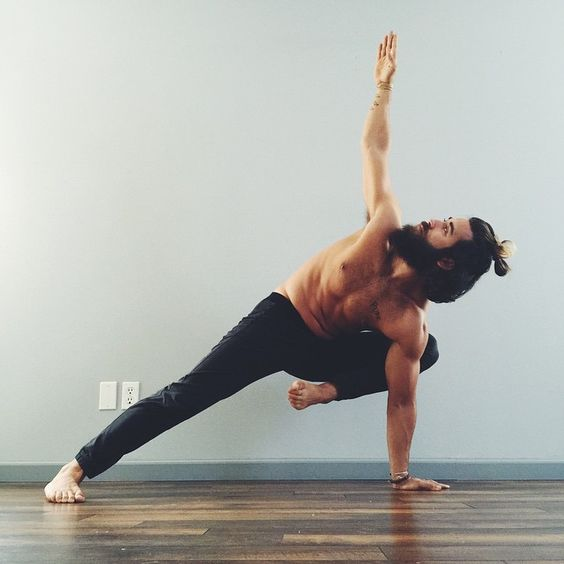
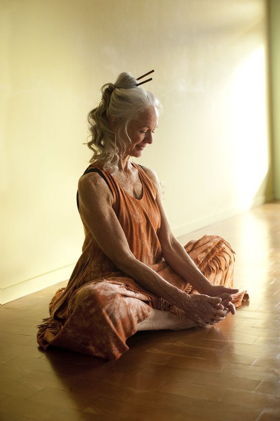
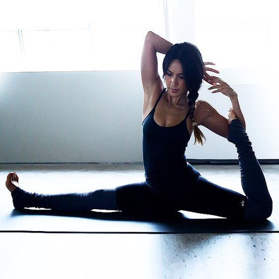
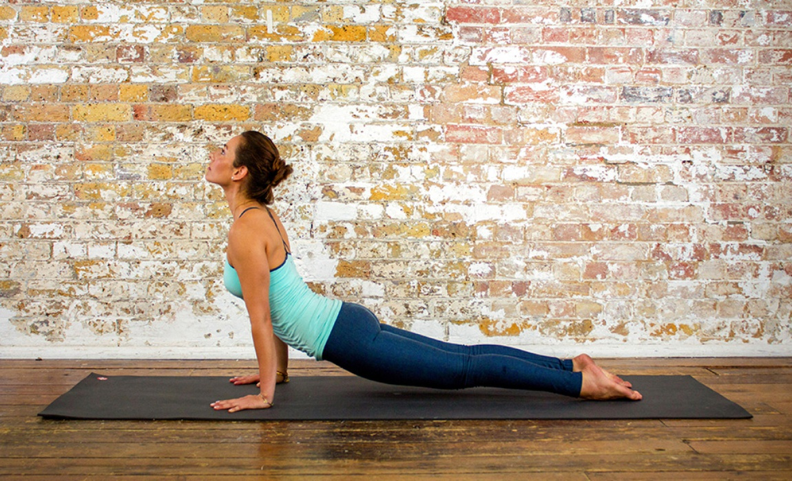

| Photo |
Events |
Price |
|  |
Yoga for menThis class started in 2010 and has been held every term time Thursday evening since then. It comprises all of the usual elements of traditional Hatha Yoga including: centring via breath awareness, postures/stretching (asanas), breathing practices (pranayama), sound practices (mantra) and guided relaxation (often in the form of Yoga Nidra). Some of the class will be in a flowing, dynamic style. |
10DKK |
|  |
You are never too old for YOGGACome together with like-minded individuals and be a part of Australia’s ‘Biggest Yoga Class’. Be part of the combined energy of up to 500 yogis practising together and reap the mental and physically rewards of this 1 hour outdoor class.
Practise yoga one of Sydney’s most beautifully discreet locations looking at the harbour and city skyline
Yoga helps to relieve stress and expel negative energy
One-hour class is held a couple of times a year so come and join in the energy and fun |
340DKK |
|  |
SEXY bodyThis workshop is for you that wishes to become more confidant with flipping upside down and also you who have a desire to relinquish the fear of falling. This means that you will be challenged both physically and mentally and you might experience that some of your boundaries are being pushed, both on and off the yoga mat. |
400DKK |
|  |
Fresh MorningOn the daily classes, inversions are sometimes a small part of the yoga practice, and we often feel like there is not enough time to go deeper into them and explore the effect they can have on the body. |
250DKK |